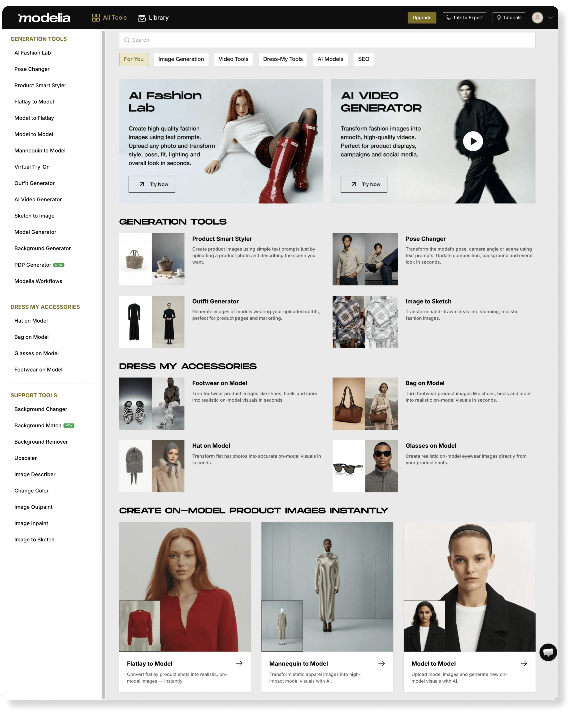
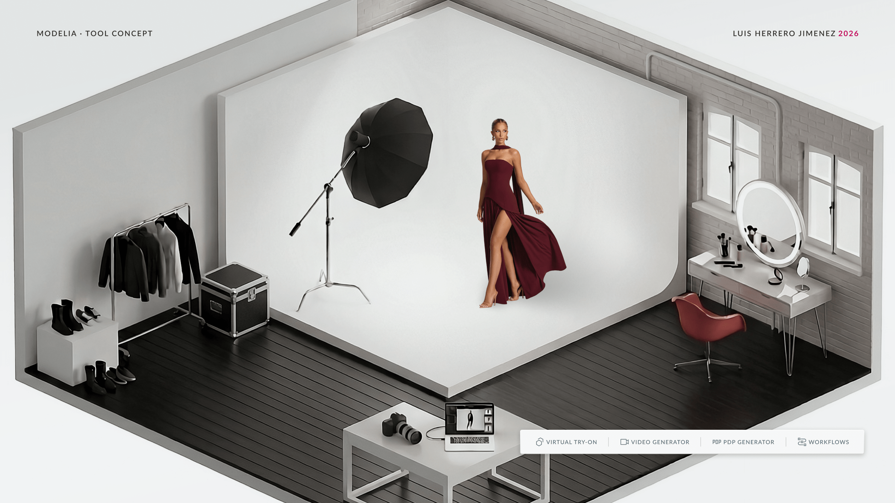
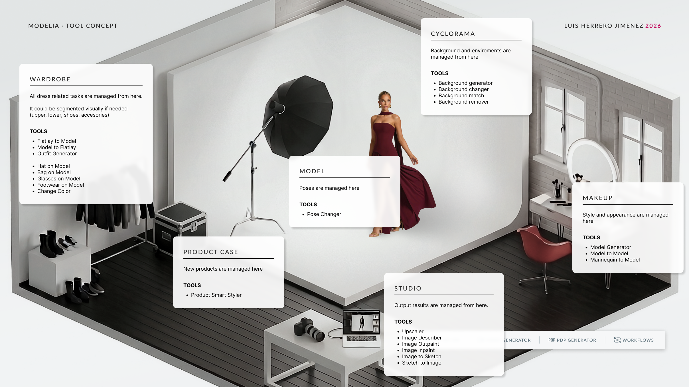

By translating the natural language of photo production into a unified visual workspace, this concept consolidates multiple scattered tools into spatial categories, removing today's cognitive overload and empowering the user to act as a Photography Director on set.
Product Designer
Web
Interview 2026/05
Modelia is an AI-powered platform that helps fashion ecommerce brands generate on-model imagery from flat lays, mannequin shots, or existing photos, providing a faster, cheaper, and more versatile alternative to traditional photoshoots.
The Challenge
As Modelia's product expanded, capabilities multiplied: pose changers, background generators, virtual try-ons, video generators, sketch-to-image, and more. Each new AI model became a new tool in the menu, leading to a dense, hierarchically flat interface where users have to choose between dozens of entry points before seeing any result.

The challenge I picked from the brief said:
"We are developing a new interface that is image-centric instead of tool-centric, so users can iterate on the same canvas until they get the image they're looking for."
The challenge was open and strategic: how to design an interface where the image itself becomes the workspace, not the destination at the end of a fragmented funnel.
Understanding the user and the problem
Modelia's user are typically not 3D artists or a creative technologists. The core audience seems to be ecommerce and marketing teams at fashion brands, often Shopify-first stores, whose mental model comes from briefing real photoshoots, not from operating editing software.
Their language is spatial and holistic: set, model, wardrobe, light, camera. Today's interface however, forces them to translate that thinking into a list of menu items.
The problem is not a lack of capability, since Modelia already covers most of what users need, but a lack of clear (and clean) hierarchy which creates a lot of frictions.
The constant context switching forces users to remember their previous decisions while they guess the process instead of knowing it.
The proposal: Modelia Studio
A single workspace shaped like an isometric photo studio, where every tool from the current menu becomes an object inside the set. The metaphor borrows from configurators that already work for non-technical audiences, like IKEA Planner, and compresses dozens of features into a small number of intuitive spatial zones.
The 3D scene is not the output: AI still generates the final 2D photorealistic image. The studio is the control panel working as a visual prompt builder that turns the user's spatial decisions into a structured brief for the model.

Each zone of the studio replaces a category of actions from the current menu:
Selecting any object opens a contextual modal.The prompt becomes an assistant, not the protagonist.
Secondary features or complex actions that don't fit the metaphor live in a persistent quick actions bar.

Implementation approach
A pragmatic rollout would have three phases: